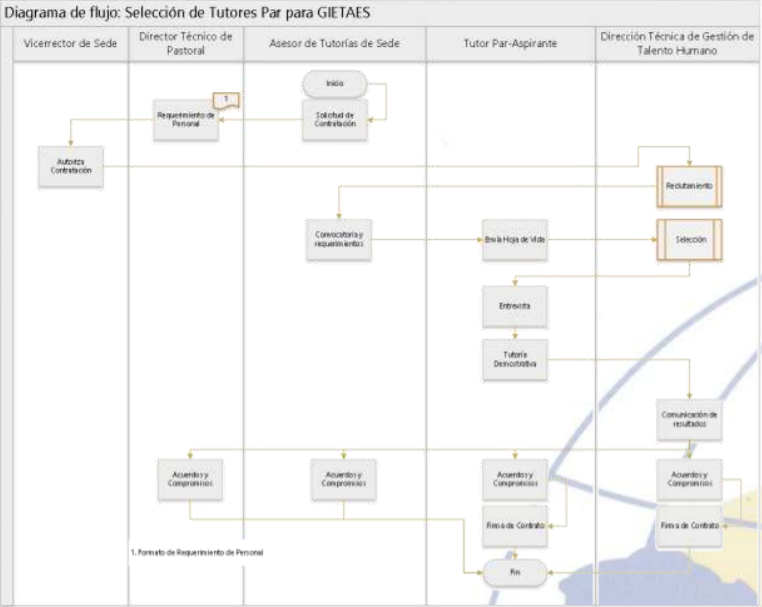
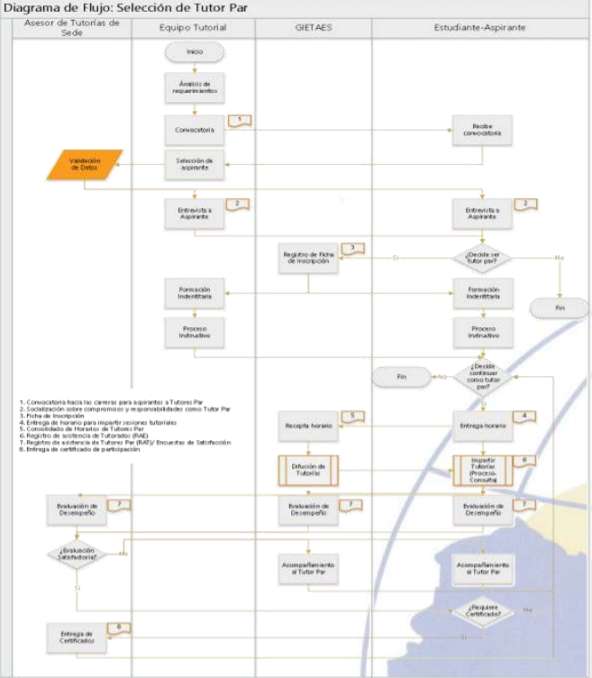
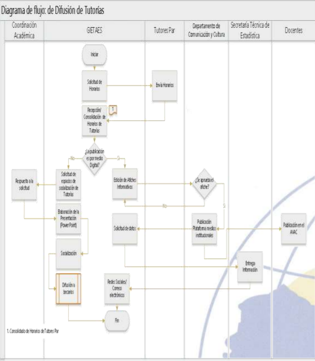
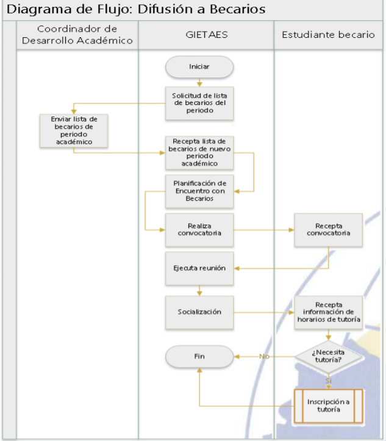
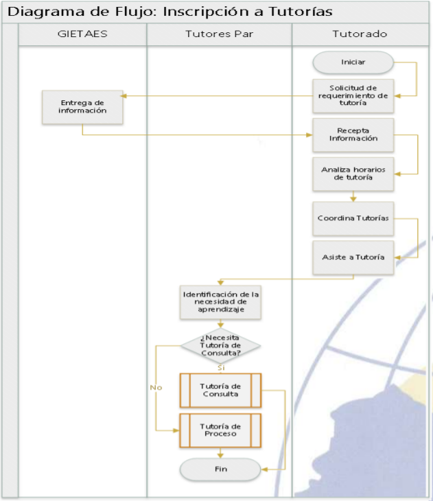
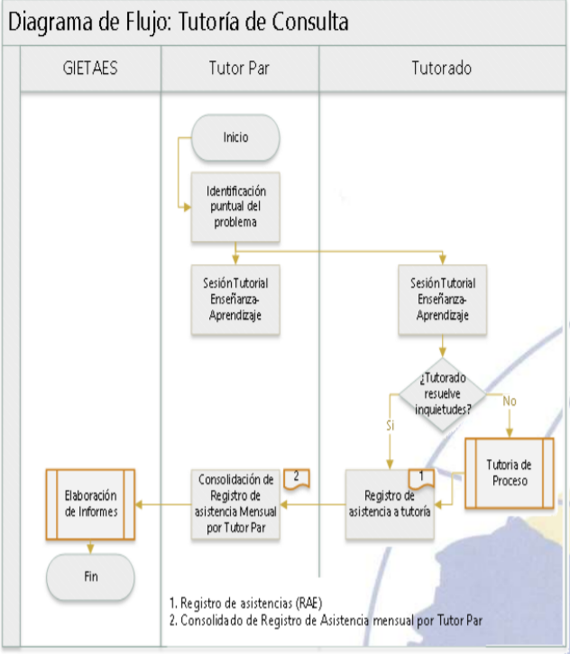
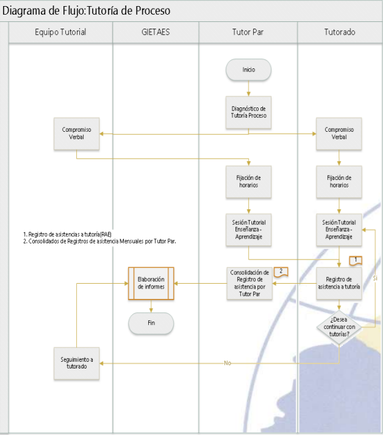
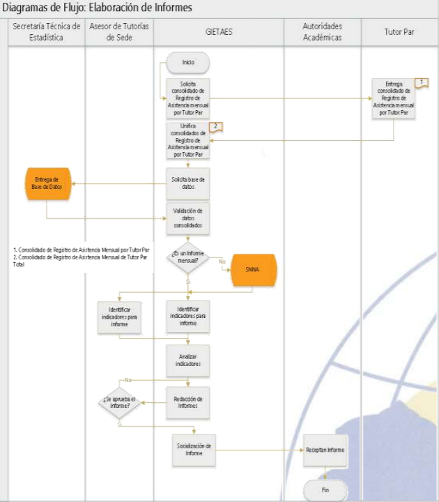
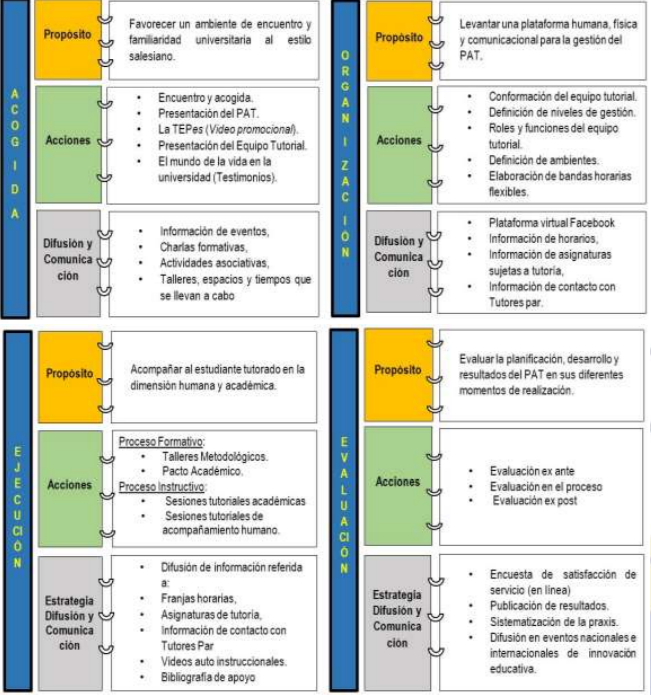
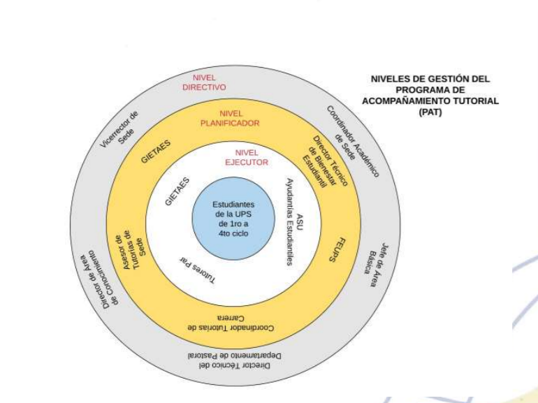

Manual para la instrumentación de la Tutoría Académica
(Modalidad entre pares)
Introducción
La Tutoría entre Pares (TEP) es de larga data en la educación superior anglosajona y europea, pero de reciente incorporación en Latinoamérica y particularmente en el Ecuador. Esta modalidad tutorial ha sido introducida, con algunas variantes, en las últimas décadas en universidades francesas, italianas y españolas como acompañamiento metodológico o como alternativa para enfrentar el fracaso académico.
En contextos universitarios, la TEP, es concebida desde una diversidad de enfoques, se diferencian unas de otras por los distintos énfasis puestos en una u otra etapa del trayecto universitario. Algunos enfoques centran la mirada en los primeros años de estudios para lograr la eficiencia inicial, otros concentran sus esfuerzos a lo largo del trayecto universitario para garantizar la permanencia y no pocos fijan su atención en el egresamiento del estudiante.
Esta modalidad tutorial, en la Universidad Politécnica Salesiana, denominada Tutoría entre Pares al estilo salesiano (TEPes) acompaña académicamente a los estudiantes de los cuatro primeros niveles de la unidad básica de la organización curricular de sus carreras de grado para mejorar los resultados de aprendizaje y contribuir a la disminución de los índices de deserción y repitencia estudiantil.
La TEPes se ha convertido en una experiencia educativa única de Tutores Par y Tutorados al resignificar la tutoría desde la perspectiva de la amorevolezza, facilitadora de ambientes intensos de participación, relaciones amistosas y fraternas.
El presente manual tiene el propósito de orientar la implementación de la TEPes y de su estrategia el Plan de Acción Tutorial (PAT) en la Universidad Politécnica Salesiana. Este manual compendia la teoría y la praxis desarrollada a lo largo de seis años de su implementación.
1. La Tutoría entre Pares al estilo salesiano
El Sistema Preventivo constituye el pilar más importante de la relación educativa en las instituciones de educación salesiana.
Varios biógrafos y estudiosos del quehacer educativo bosquiano concluyen que la pedagogía salesiana es un modelo pedagógico basado en la preventividad (razón, religión y amabilidad), que coloca al estudiante en el centro de todo proceso educativo-formativo y que mantiene su vigencia y legado en la educación actual, a pesar de la diferencia de los escenarios históricos.
La razón, religión y amabilidad se constituyen en los ejes rectores de la Tutoría entre Pares al estilo salesiano (TEPes) así como de su estrategia, el Plan de Acompañamiento Salesiano (PAT).
El sistema preventivo es la esencia de la pedagogía del acompañamiento expresado en la TEPes. El estilo salesiano implica establecer relaciones educativas sobre la base de la familiaridad, el afecto y la confianza. El acompañamiento salesiano, por lo tanto, es, un acto de amistad, de asesoría y de apoyo académico, desarrollado en un ambiente intenso de participación y relaciones fraternas, que asocia en una única experiencia a los tutores par y a los tutorados.
1.1. ¿Qué es la TEPes?
La entendemos como acompañamiento educativo-pastoral que promueve el encuentro y crecimiento mutuo Tutor Par-Tutorado en un ambiente creado de valores, propicia una relación educativa dialogada y horizontal en el proceso de enseñanza aprendizaje y contribuye a la inclusión educativa y autonomía académica de los estudiantes.
1.2. ¿Quién es el Tutor Par?
Para la TEPes, el Tutor Par es un estudiante educador-animador, con vocación de servicio, buen rendimiento académico, habilidades sociales y comunicativas, formación salesiana y disponibilidad de tiempo. El Tutor Par, mediado de la pedagogía del acompañamiento salesiano, brinda orientación y acompañamiento académico personalizado o grupal a sus pares de los primeros niveles de su misma titulación y que manifiestan necesidades de:
- Nivelación de conocimientos
- Asesoría en trabajos y proyectos
- Preparación de pruebas y exámenes
Son Tutores Par aquellos estudiantes preferentemente a partir de cuarto nivel y que tengan promedios superiores a 85 puntos, de acuerdo a los análisis pertinentes en casos a ser considerados, podrán incluirse como Tutores Par a estudiantes a partir del tercer nivel que hayan sido destacados en la asignatura objeto de tutoría
1.3. ¿Quién es el Tutorado?
Son estudiantes matriculados en la Universidad, que presenten necesidades de aprendizaje en la asignatura objeto de tutoría, preferentemente de los primeros ciclos de la unidad básica del plan de estudios de una carrera de grado.
También son Tutorados los estudiantes con capacidades diferenciadas que requieren un acompañamiento personalizado.
Entre los acuerdos, asumidos en el compromiso verbal, en el marco de las sesiones tutoriales, tenemos a los siguientes:
- Asistir de manera regular a las sesiones tutoriales en las franjas horarias establecidas.
- Participar activamente en las sesiones tutoriales.
- Dialogar regularmente con su tutor par acerca de los avances y progreso hacia la promoción.
- Asumir la responsabilidad final del aprendizaje.
2. Fundamentos pedagógicos de la TEPes
La TEPes y su estrategia, el Plan de Acompañamiento Tutorial (PAT), se fundamenta en la pedagogía del acompañamiento salesiano, en el sistema categorial (educación-formación-aprendizaje) de la pedagogía constructivista, teoría crítica y principios del aprendizaje colaborativo contextualizados y asumidos críticamente en el Modelo Educativo de la Universidad Politécnica Salesiana.
3. El Plan de Acompañamiento Tutorial para la TEPes
El Plan de Acompañamiento Tutorial (PAT) para la TEPes es el resultado de un proceso de construcción colectiva puesto en marcha en un contexto específico y unidad educativa concreta, la Universidad Politécnica Salesiana.
Se lo define como una “acción de intervención educativa, fundamentada, planificada, organizada y ejecutada por un equipo tutorial, en el que sus actores principales despliegan un conjunto de acciones integradas en cuatromomentos relacionales denominados acogida, organización, ejecución y evaluación”. Es el resultado de una actividad constructiva, a través de la cual, los distintos actores educativos involucrados le dan intencionalidad, dirección y sentimiento a lo vivido.
3.1. Momentos del PAT para la TEPes
La categoría “momento” hace referencia a “... instancia, ocasión, circunstancia o coyuntura por la que atraviesa un proceso o “cadena” que no tiene comienzo ni término definido, el paso de un momento a otro está determinado por el dominio transitorio de dicho momento sobre los otros que siempre están presentes” (Matos C. 1987: 34).
En el PAT para la TEPes, los “momentos” se constituyen en espacios atemporales, cíclicos, recurrentes que rompen la linealidad cronológica que caracterizan a programas y proyectos. Cada momento “relacional” marca un propósito e intención educativa; promueve, a través de sus acciones formativas e instructivas una relación educativa que propicia el encuentro y el inter-aprendizaje.
Son momentos del PAT los siguientes:
- Momento de Acogida: Celebración de bienvenida y encuentro con estudiantes de nuevo ingreso con necesidades de aprendizaje.
- Momento de Organización: Integración y conformación de grupos para la gestión del PAT para la TEPes.
- Momento de Ejecución: Conformación de grupos de estudiantes tutorados en torno a determinados tipos de necesidades, inquietudes, ritmos y actividades de estudio compartido.
- Momento Evaluativo: Retroalimentación para la mejora continua del PAT (Ver Anexo 1).
3.2. Las Sesiones Tutoriales en la modalidad entre pares
Se constituyen en espacios y ambientes educativos-formativos por excelencia. En ellos se recrea el “patio” como lugar privilegiado de encuentro tutor par-tutorado propicio para el inter-aprendizaje. Participan de las sesiones tutoriales todos los estudiantes con necesidades de aprendizaje y que se encuentran matriculados en los cuatro niveles de la Unidad Básica de la organización curricular de las carreras que oferta la UPS.
Cada sesión tiene una duración de dos horas distribuidas en franjas horarias a lo largo de una semana. Se instrumentan, las sesiones tutoriales, en base a acuerdos alcanzados con los Tutorados en el denominado compromiso verbal.
4. El Equipo Tutorial: Roles y funciones
El Equipo Tutorial está conformado por docentes y administrativos delgados de los departamentos de:
Pastoral Universitaria (instancia proponente del proyecto), académico, administrativo y Tutores Par del Grupo de Innovación Educativa en Tutorías Académicas al Estilo Salesiano (GIETAES). Fortalecido el Equipo Tutorial, serán quienes gestionen el Centro Tutorial en sus respectivas Sedes. Forman parte del Equipo Tutorial los siguientes:
4.1. Director(a) de Área de Conocimiento
Gestiona las acciones comprometidas con la realización del PAT, en su área de conocimiento, ante el Vicerrector de Sede. Apoya su realización y evalúa con los integrantes del equipo tutorial los resultados alcanzados.
4.2. Asesor(a) de Tutorías de Sede
Es un educador-animador, delegado por el Director del Departamento de Pastoral Universitaria de cada Sede, de acuerdo a los siguientes criterios:
- Docente del Departamento de Pastoral Universitaria.
- Formación pedagógica salesiana.
- Carisma salesiano (Convergencia espiritual salesiana).
El Asesor de Tutorías de Sede se encarga de:
- La gestión y evaluación del PAT para la TEPes. Apoya el cumplimiento de los propósitos y acciones desplegadas en cada momento del PAT. Organiza, instrumenta y evalúa con el equipo tutorial el impacto de las sesiones tutoriales en cada período académico. Presidir los equipos de tutores, definir el número de tutores que demanda la organización del proyecto. Informa los logros alcanzados al Director del Departamento de Pastoral Universitaria y autoridades académicas que lo solicitaren.
- Identificar las necesidades de entrenamiento y capacitación de los Tutores Par.
- Revisión y selección de los Tutores Par.
4.3. Coordinador(a) de Tutorías de Carrera.
Es un educador-animador, delegado por el Director de Carrera al Equipo Tutorial, que:
- Monitorea, en coordinación con el Asesor de Tutorías de Sede y Tutor Par del GIETAES, el
cumplimiento de las sesiones tutoriales realizadas por los estudiantes Tutor Par de su carrera de
grado.
- Organiza y coordina con los docentes titulares de cátedra, cuyas materias son objeto de tutorías, los talleres de acompañamiento metodológico impartido a los Tutor Par. Evalúa semestralmente, luego de concluido un periodo académico, el cumplimiento de los propósitos y acciones del PAT para la TEPes en su respectiva carrera de grado.
- Elabora con la colaboración del Tutor Par delegado por el GIETAES, el informe semestral de acompañamiento académico a los estudiantes tutorados.
- Revisa y selecciona los Tutores Par de la carrera
4.4. Tutor Par
Son estudiantes, educadores-animadores, de niveles superiores que brindan soporte y asesoría académica a sus pares de niveles inferiores en su proceso de formación a lo largo del trayecto universitario. El Tutor Par realiza acompañamiento académico grupal a los estudiantes Tutorados, preferentemente, de los cuatro primeros niveles que oferta la universidad y, de ser el caso, a Tutorados de niveles superiores que manifiestan necesidades de:
- Nivelación de conocimientos.
- Asesoría en trabajos.
- Preparación de pruebas y exámenes.
- Orientación para recibir apoyo educativo extraescolar siempre que fuere necesario.
5. El GIETAES - Asociacionismo Salesiano Universitario (ASU) Ayudantías Estudiantiles
5.1. Grupo de Innovación Educativa en Tutorías Académicas al Estilo Salesiano (GIETAES)
Constituido por estudiantes tutores y docentes del Departamento de Pastoral Universitaria. GIETAES es el responsable de la sistematización del PAT para la TEPes y de la formación de los colectivos, estudiantil, docente y administrativo, involucrados en esta acción de intervención educativa. Es su deber:
- Presentar al equipo tutorial el plan de formación de estudiantes tutores, modalidad entre pares.
- Orientar metodológicamente a los Tutores Par en la instrumentación de las sesiones tutoriales.
- Sistematizar la praxis educativa con fines de innovación, generalización y publicación.
Para la incorporación de los Tutor Par en el equipo GIETAES se analiza la experiencia, responsabilidad y liderazgo de los candidatos; con ellos, la institución acuerda veinte horas de dedicación exclusiva a la organización, planificación, ejecución y evaluación del programa tutorial implementado en la Sede. Para ello, la figura de compromiso es la de “Ayudante de Cátedra”
5.2. ASU-Ayudantías Estudiantiles
Es un espacio asociativo estudiantil, un semillero de Tutores Par. Los miembros de grupo ASU Ayudantías Estudiantiles son parte de un itinerario formativo-vivencial que promueve la participación en la tutoría entre pares al estilo salesiano.
Pertenecen al grupo ASU-Ayudantías Estudiantiles todos los estudiantes que participan en calidad de Tutores Par.
6. Sistema de Incentivos para Tutores Par destacados
Está pensado para incentivar la participación de los estudiantes comprometidos con la tutoría entre pares y que acrediten responsabilidad en la ejecución de las mismas. La naturaleza de los incentivos es de carácter académico, sin obligación de otorgar los mismos por parte de la institución si en el análisis previo se creyere conveniente no ejecutar el mismo. Entre los cuáles tenemos los siguientes:
- A los integrantes del ASU-Ayudantías Estudiantiles se entregará un certificado de competencias al concluir su carrera universitaria.
- A los estudiantes que pertenecen al grupo asociativo ASU-Ayudantías Estudiantiles se les validará las horas requeridas como extensión universitaria o prácticas de servicio comunitario. De la misma manera se procederá con aquellos estudiantes que optaren por la tutoría entre pares y que no pertenezcan al ASU.
- Financiamiento a un curso paracadémico (seminarios, cursos de actualización) de interés del estudiante Tutor Par. El mismo aplicará únicamente a aquellos estudiantes que han demostrado constancia y responsabilidad al finalizar un período académico.
- Los Tutores Par que se hayan destacado por su nivel de compromiso y trabajo responsable, comprometiéndose con su labor más allá de un semestre, podrá ser tomado en cuenta para una beca especial previo análisis del Vicerrector de Sede.
7. Procesos
7.1. Selección de GIETAES
Este proceso da inicio a la implementación de la TEPes en la Universidad Politécnica Salesiana. El diagrama de flujo Selección de GIETAES (Figura 1) da cuenta del proceso de selección, contratación e incorporación al grupo GIETAES de los Tutores Par. En la entrevista realizada al Tutor Par-Aspirante estarán presentes: el Director Técnico de Pastoral, el Asesor de Tutorías de Sede, el Jefe del Área Básica y el representante de la Dirección Técnica de Gestión de Talento Humano.
Figura 1: Selección de GIETAES
7.2. Selección de Tutor Par
En el proceso de selección del Tutor Par (Figura 2) se detallan los pasos a seguir para la incorporación de Tutores Par a la TEPes.
Figura 2: Selección de Tutor Par
7.3. Difusión de Tutorías
La difusión de la TEPes está dada a través de procesos como: organización, planificación, diseño, aprobación y difusión por medios físicos y digitales (ver Figura 3).
Figura 3: Difusión General
7.4. Difusión a Becarios
El seguimiento y acompañamiento a los estudiantes becarios de la Universidad Politécnica Salesiana debe ser personalizado. Es por ello que el diagrama de flujo Difusión a becarios (Figura 4) evidencia el proceso de la promoción de la TEPes.
7.5. Inscripción a Tutoría
El estudiante que se encuentre interesado en recibir tutorías puede acceder a ellas comunicándose con el grupo GIETAES y proceder con su inscripción. Este proceso está caracterizado en el diagrama de flujo inscripción a tutorías (Figura 5).
7.6. Tutoría de Consulta
La TEPes presenta la tutoría de consulta para absolver asuntos puntuales que los estudiantes requieren en la orientación de tareas, pruebas y proyectos. El diagrama de flujo (Figura 6) precisa la ruta a seguir.
7.7. Tutoría de Proceso
Hablamos de tutoría de proceso cuando el estudiante asiste a varias sesiones tutoriales de manera consecutiva para resolver problemas de aprendizaje en la asignatura objeto de tutoría. El proceso para impartir la tutoría está debidamente explicado y diferenciado del anterior en el diagrama de flujo: Tutoría de Proceso (Figura 7).
7.8. Elaboración de Informes
Su importancia radica en la consolidación, análisis e interpretación del impacto de la TEPes. Los informes se elaboran de manera mensual y un ejecutivo al final de un período académico. En el diagrama de flujo Elaboración de Informes (Figura 8) se detallan los pasos para su elaboración.
8. Anexos
Anexo 1: Despliegue de los momentos del PAT para la TEPes
Anexo 2: Diagrama Circular: Niveles de Coordinación del PAT para la TEPes
